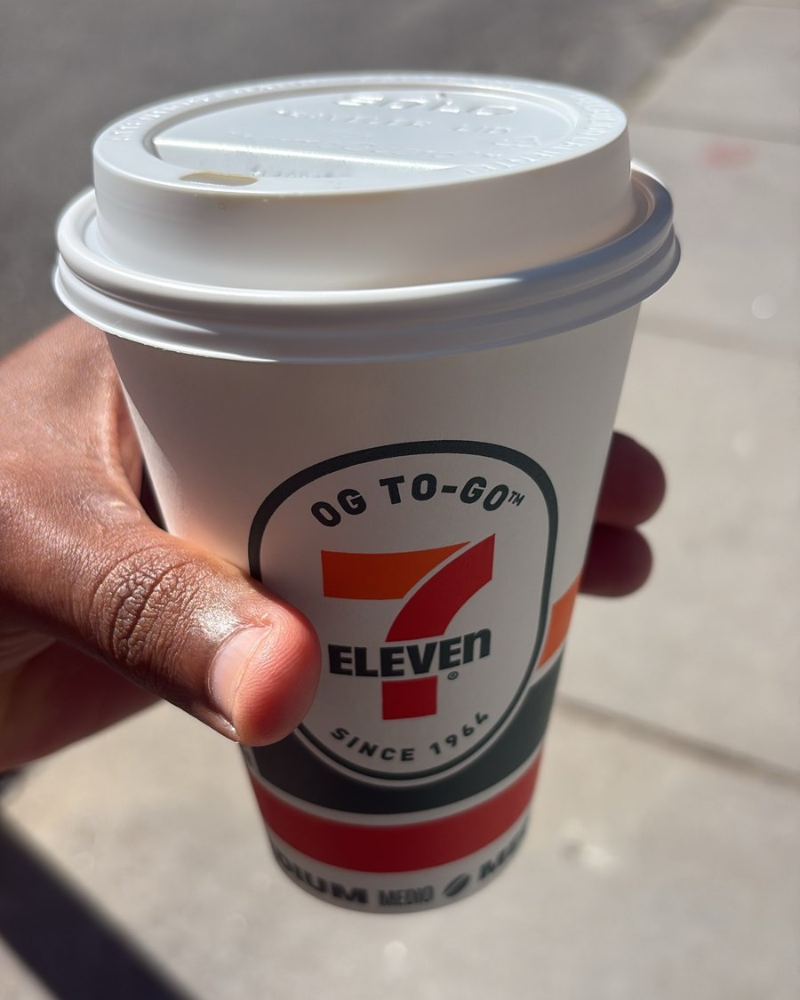
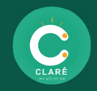
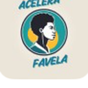

Strategy and applied AI, built from the ground up. Three and a half years at
McKinsey, a year running corporate strategy at Globo,
and a tax-compliance product of my own in production. Recruiting for a
Summer 2027 internship where AI solves a real problem for real people.

RF
Daily habit
I like cheap coffee. Same cup most days. It is the ritual that starts the work.
Summa Cum Laude
Accounting, Ibmec BH 2022. Top of the class every year, full ProUni scholarship.
5 out of 5
McKinsey analyst rating across 15+ engagements. MBA sponsored by the firm.
R$ 70M
Board-approved investment at Globo, run through the transformation office I built.
80 hires
Plus 150+ scholarships from the McKinsey Black community conference I led in Rio, 2023.
Who I am
I was born in Morro do Papagaio, a favela in Belo Horizonte, and I have been working
since I was 14.
My first job was at a small internet provider, connecting families and businesses in my
neighborhood at prices they could actually afford. At 15 I ran a free math tutoring
program for students in the community. All of them passed, and one earned a full
university scholarship.
That is where I learned the thing I still carry. Proximity to a problem is a form of
expertise. Understanding a real constraint does not come from a slide, it comes from the
person who lives with it.
At 14 I also decided to change my own trajectory, studied on my own, and won a full
scholarship to a private high school. That opened the door to Ibmec BH, where I graduated
first in my class, and then to McKinsey. Along the way I found out I am a builder more
than an advisor. I want to use AI to solve real problems for real people, not to build AI
for its own sake.
MIT Sloan exists to answer one question for me: which industry and practice do I go deep
in, so that I build genuine positioning and a network I can eventually pivot into.
AgTech with AI at the core is my leading bet. Applied AI platforms is the second.
Experience
Sep 2026 – Sep 2028
MBA Candidate
MIT Sloan School of Management · Cambridge, MA
Core semester in Data, Models & Decisions, Financial Accounting, Economic Analysis,
Communication for Leaders and Organizational Processes. Building depth in three areas:
AI product strategy, agribusiness domain knowledge, and venture building.
Jul 2025 – Jul 2026
Manager of Corporate Strategy
Globo · Rio de Janeiro · McKinsey third-year-out placement
Built Globo's AI strategy end to end. The diagnosis was that the company already spent
on AI, but the money produced bottom-up adoption with no top-down intent tied to the
P&L, and the initiatives defended the business instead of rethinking it. The board
approved two units off the back of it: an AI-first venture building cell, and a process
redesign cell running agents alongside the highest-potential functions.
Also designed a four-step methodology to evaluate any content distribution case, ran the
transformation office for a R$ 70M board-approved investment program, and led the
feasibility study for a business channel built on the Valor Econômico brand. This was
my first formal team, and leading through people rather than delivering myself was the
real lesson of the year.
Feb 2022 – Jul 2025
Senior Business Analyst
McKinsey & Company · Rio de Janeiro · 3 yrs 6 mos
Senior Business AnalystJan 2024 – Jul 2025
Business AnalystJan 2023 – Jan 2024
Business Analyst InternFeb 2022 – Jan 2023
More than 15 engagements across financial players, agriculture and media, rated 5 out of
5 and sponsored by the firm for this MBA. On an agribusiness banking assessment, a
partner suggested I use a British vendor's market model. My read was that it was the
wrong tool for Brazil, so I built my own around crop cycle, regional volatility and
regulatory nuance. The answer was that the partnership would not be competitive, and
delivering it took more courage than analysis. Real leadership is saying what needs to be
said, not what is comfortable.
Led McKinsey's largest Black community employment conference in Rio in 2023, with 10
corporate sponsors, firm leadership and university partners. It produced 80 hires and
more than 150 scholarships for under-represented talent, and it is now an annual
initiative.
Sep 2019 – Feb 2021
Financial Consultant
TopSoccer Family Office · Belo Horizonte · 1 yr 6 mos
Financial ConsultantFeb 2020 – Feb 2021
Financial Accounting InternSep 2019 – Feb 2020
Worked alongside senior accountants managing the financial, investment, accounting and
legal affairs of professional soccer athletes, covering invoicing, tax calculation and
advisory filings, M&A, and asset and financial planning. Started by analyzing athlete
cash flows to find the breakeven point between investment portfolios and their spending.
This is where the Brazilian tax code stopped being theory for me, and it is the reason
Clarê exists today.
2019 – 2022
BSc Accounting, Summa Cum Laude
Ibmec Belo Horizonte
Full government ProUni scholarship. Voted best student of the program every year and
best of the graduating class.
From age 14
First jobs
Local internet provider · Community tutoring program
Connected families and small businesses in my neighborhood to the internet at prices they
could afford. At 15, ran a free math program for students in the community. Every one of
them passed their exams and one earned a full university scholarship.
What I build

2026 – present
Founder, Clarê
WhatsApp bot for Brazilian micro-entrepreneur tax compliance
In production since June 2026 on Python, FastAPI, Railway and Supabase. Clarê logs into
the government portal, generates the monthly tax slip and delivers the PDF straight into
WhatsApp, so the entrepreneur never opens a website. 37 users on the base, 70% onboarding
completion, and three commercial tiers defined. I am deliberately running structured
tests on the core hypotheses before spending anything on growth, because I still cannot
prove it solves a real pain, scales, or gets paid for.

Sep 2022 – present
Project Manager, Acelera Favela
Social project · career access for favela talent
The thesis is my own history. Talent exists everywhere, what is missing is access,
guidance and network. I am building a social ecosystem that gives low-income Black young
people in Brazilian favelas professional growth opportunities through mentoring, training,
and publicizing scholarships and job openings. It runs two Saturdays a month, and the goal
of this cycle is consistency rather than scale.
For recruiters
One next action
Give me 20 minutes about a problem you are actually trying to solve.
Not a company overview, not a coffee chat about culture. Send me the problem in advance and
I will show up with a point of view on it.
I am recruiting for a Summer 2027 internship in product strategy, AI
applications or business development. My primary direction is agriculture technology with AI
at the core. My second is AI infrastructure and applied AI platforms. I am authorized to work
in the US on F-1 CPT for the internship.